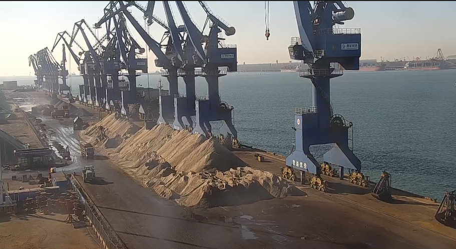
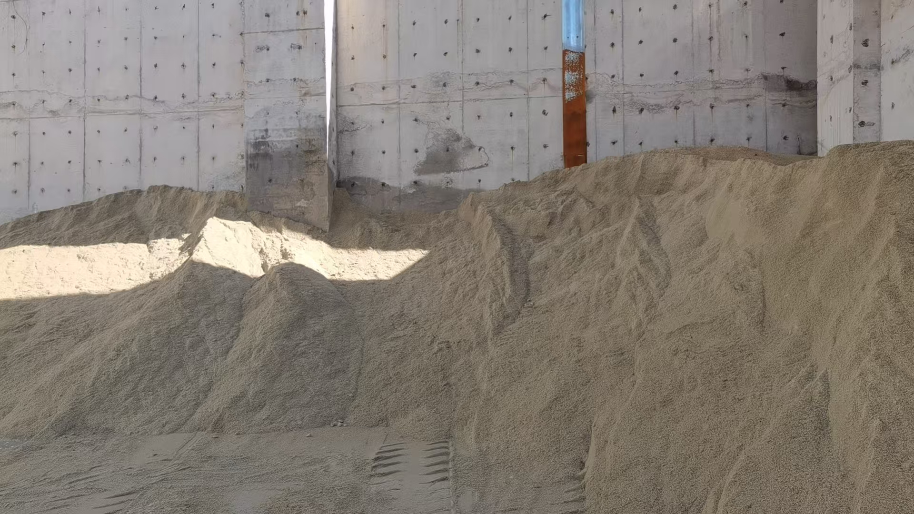

EU CBAM Enters Definitive Phase: What the Carbon Border Tax Means for Cement and Slag Exporters
The EU Carbon Border Adjustment Mechanism entered its definitive phase on January 1, 2026, imposing a carbon levy on cement, clinker, and other carbon-intensive imports. With CBAM certificates priced at EUR 75.36 per tonne of CO2 in Q1 2026, the cost structure for exporting conventional cement to Europe has fundamentally changed. For suppliers of supplementary cementitious materials and low-carbon alternatives, the new regime creates both compliance obligations and competitive opportunity.
欧盟 CBAM 进入 definitive 阶段：碳边境税对水泥与矿渣出口商意味着什么
欧盟碳边境调节机制于 2026 年 1 月 1 日进入 definitive 阶段，对水泥、熟料及其他高碳进口商品征收碳税。2026 年第一季度 CBAM 证书定价为每吨二氧化碳 75.36 欧元，向欧洲出口传统水泥的成本结构已发生根本性变化。对补充胶凝材料与低碳替代品的供应商而言，新机制既带来合规义务，也创造了竞争机遇。

On January 1, 2026, the European Union's Carbon Border Adjustment Mechanism transitioned from its transitional reporting phase into full definitive implementation. The mechanism now requires importers of cement, clinker, steel, aluminum, fertilizers, and hydrogen to surrender CBAM certificates priced against the EU Emissions Trading System. For Q1 2026, the effective carbon price applied at the border stands at EUR 75.36 per tonne of CO2 equivalent. This is not a background regulatory change. It is a direct cost addition on every tonne of carbon-intensive material entering the EU market, and it reshapes the competitive landscape for international cement and slag suppliers.
1. Why cement is directly in CBAM's crosshairs
Cement and clinker production are among the most carbon-intensive industrial processes, with emissions typically ranging from 0.6 to 0.9 tonnes of CO2 per tonne of clinker depending on kiln technology and fuel mix. Under CBAM, an importer bringing conventional Portland cement clinker into the EU must now purchase and surrender certificates covering the embedded emissions of that production. At EUR 75 per tonne CO2, the carbon cost alone can add EUR 45 to 68 per tonne of clinker at the border before any product value, freight, or margin is considered. This makes high-carbon cement imports structurally less competitive inside the EU and forces a recalculation of supply chain economics for any exporter targeting European markets.

2. The slag and SCM opportunity under a carbon-adjusted market
For suppliers of ground granulated blast furnace slag and other supplementary cementitious materials, CBAM creates a structural advantage. GGBFS is a by-product of steelmaking and its production does not involve the same calcination process that generates the majority of clinker's CO2 emissions. When used as a clinker substitute in blended cement, GGBFS reduces the overall carbon intensity of the final product. Under CBAM's embedded emissions methodology, a lower-carbon cement blend will face a proportionally lower border carbon cost. This means that exporters offering high-quality, specification-consistent slag and slag-based products can now command a clearer competitive edge in the EU market compared to conventional clinker suppliers. The economic incentive to source slag as a feedstock or finished material has moved from sustainability preference to direct cost arbitrage.

3. What exporters need to do now
The shift from transitional reporting to definitive CBAM means that declarants now need accredited verifiers, precise embedded emissions data, and a clear understanding of how their products' carbon footprints compare to the EU benchmark. For cement and slag traders, the immediate priorities are threefold. First, map the carbon intensity of your product portfolio and identify which materials have the lowest embedded emissions per usable tonne. Second, ensure that your supply chain documentation includes verifiable production emission data, because CBAM compliance depends on accredited verification. Third, communicate the carbon advantage of your low-carbon offerings clearly to European customers who are now facing direct carbon costs on every import shipment. The traders who move first on carbon-transparent supply chains will capture the early advantage as European buyers recalibrate their procurement criteria.
CBAM is not a distant policy discussion. It is now a line item on import cost sheets. For exporters of traditional cement and clinker, the margin compression is real and immediate. For suppliers of GGBFS, GBFS, and blended low-carbon materials, the new regime offers a tangible commercial opening. The key is to treat carbon data with the same discipline as chemical specification and loading execution: measure it, verify it, and make it part of the value proposition you bring to market.
2026 年 1 月 1 日，欧盟碳边境调节机制从过渡性报告阶段转入全面 definitive 实施。该机制现要求水泥、熟料、钢铁、铝、化肥及氢的进口商提交与欧盟碳排放交易体系挂钩的 CBAM 证书。2026 年第一季度，边境适用的有效碳价为每吨二氧化碳当量 75.36 欧元。这不是一项背景性的监管变化，而是对每一吨进入欧盟市场的高碳材料直接增加成本，它正在重塑国际水泥与矿渣供应商的竞争格局。
1. 水泥为何直接处于 CBAM 瞄准线内
水泥与熟料生产属于碳排放强度最高的工业流程之一，视窑炉技术与燃料组合不同，熟料每吨二氧化碳排放通常在 0.6 至 0.9 吨之间。在 CBAM 下，将传统硅酸盐水泥熟料进口到欧盟的进口商现须购买并提交覆盖该生产隐含排放的证书。按每吨二氧化碳 75 欧元计算，仅碳成本即可在边境为每吨熟料增加 45 至 68 欧元，这还不包括产品本身价值、运费或利润。这使得高碳水泥进口在欧盟内部结构性竞争力下降，并迫使任何瞄准欧洲市场的出口商重新核算供应链经济。
2. 碳调整市场中的矿渣与 SCM 机遇
对磨细粒化高炉矿渣及其他补充胶凝材料的供应商而言，CBAM 创造了一种结构性优势。GGBFS 是钢铁生产的副产品，其生产过程不涉及产生熟料大部分二氧化碳排放的煅烧工序。当用作掺配水泥中的熟料替代品时，GGBFS 降低了最终产品的整体碳强度。在 CBAM 的隐含排放计算方法下，低碳水泥掺配物将面对成比例更低的边境碳成本。这意味着，提供高品质、规格稳定的矿渣及矿渣基产品的出口商，与传统熟料供应商相比，现可在欧盟市场拥有更明确的竞争优势。将矿渣作为原料或成品采购的经济激励，已从可持续性偏好转向直接的成本套利。
3. 出口商现在需要做什么
从过渡性报告到 definitive CBAM 的转变意味着，申报人现在需要经认可的核查机构、精确的隐含排放数据，以及对其产品碳足迹与欧盟基准对比的清晰理解。对水泥与矿渣贸易商而言，眼前的优先事项有三。第一，绘制产品组合的碳强度图谱，识别哪些材料每吨可用量的隐含排放最低。第二，确保供应链文件包含可核实的生产排放数据，因为 CBAM 合规依赖经认可的核查。第三，向现在面临每批进口直接碳成本的欧洲客户清晰传达低碳产品的碳优势。率先建立碳透明供应链的贸易商将在欧洲买家重新校准采购标准时抢占先机。
CBAM 不是遥远的政策讨论，而是现已出现在进口成本表上的一项明细。对传统水泥与熟料出口商而言，利润压缩真实且即时。对 GGBFS、GBFS 及掺配低碳材料的供应商而言，新机制提供了切实的商业窗口。关键在于以与化学规格和装运执行同等的严谨态度对待碳数据：测量它、核实它，并让它成为你对市场价值主张的一部分。
Explore products or discuss your inquiry.
If this market signal is relevant to your sourcing plan, you can review our core product pages or contact us with laycan, quantity, target specification and loading method.
Request a quote